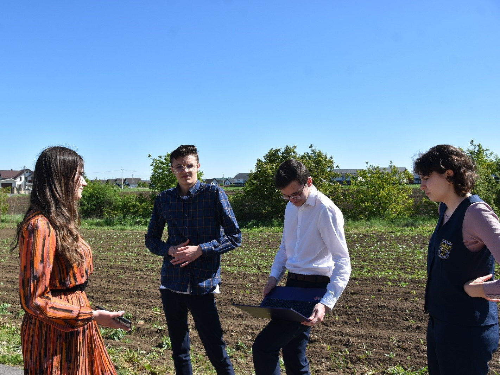
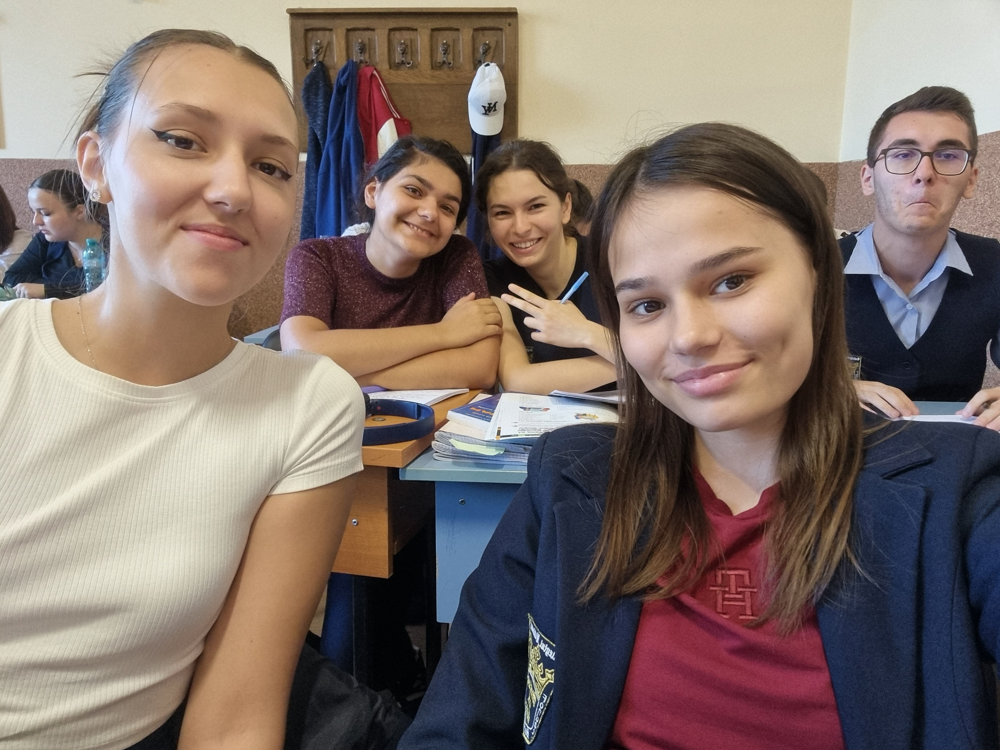
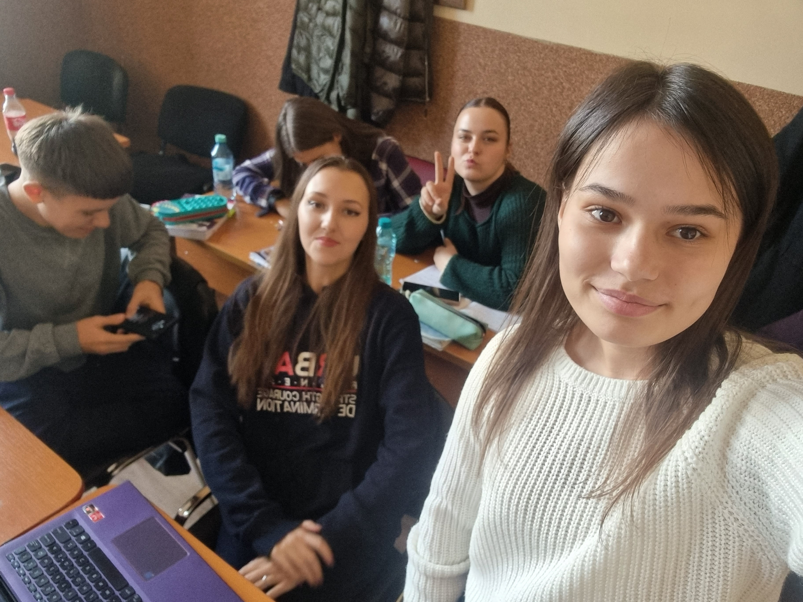
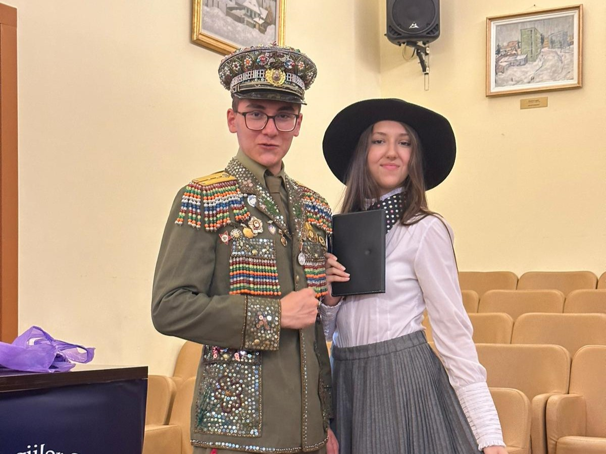
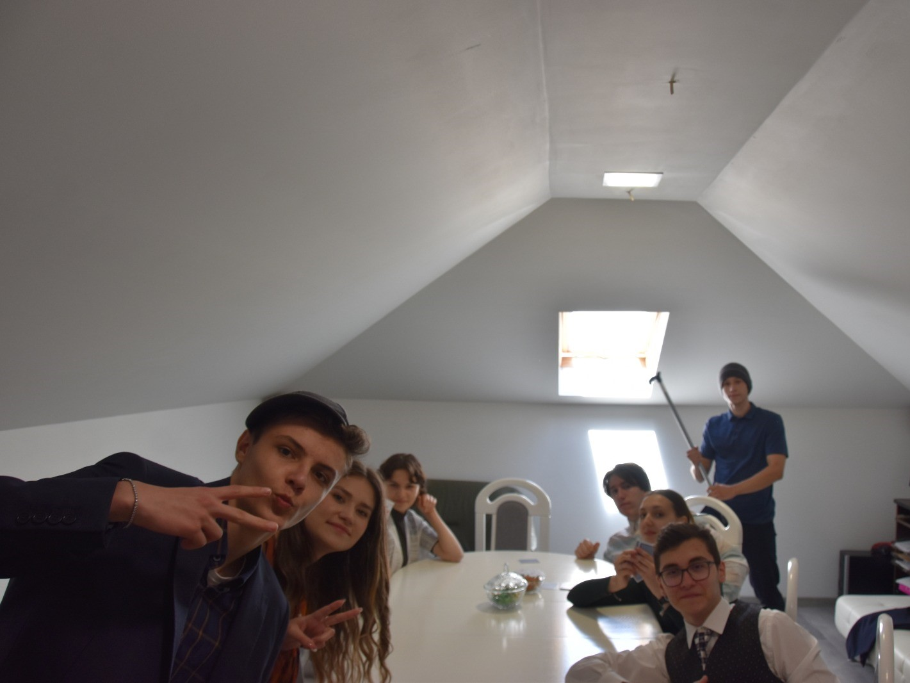
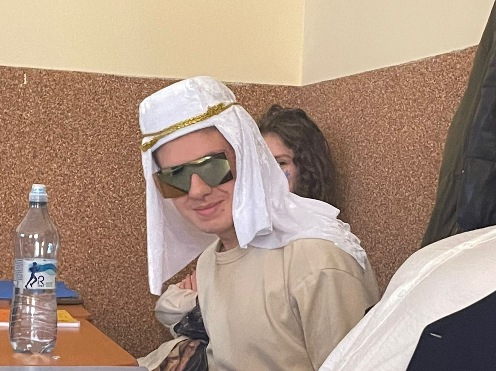
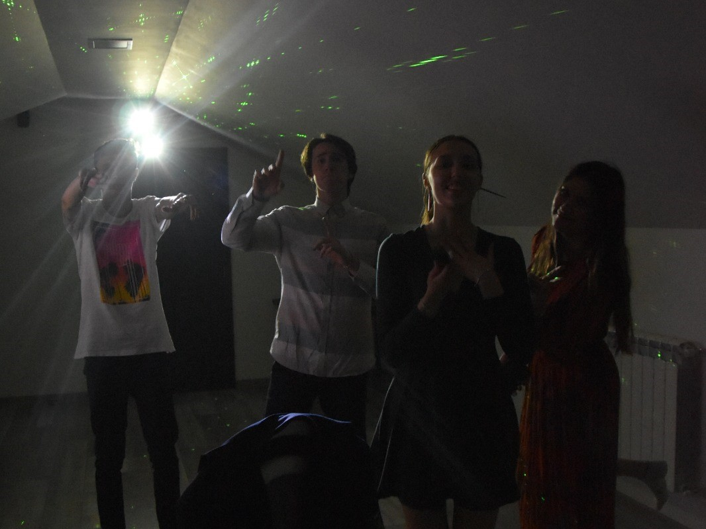
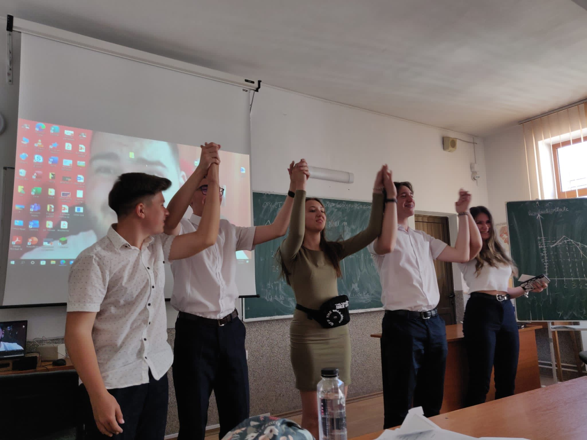
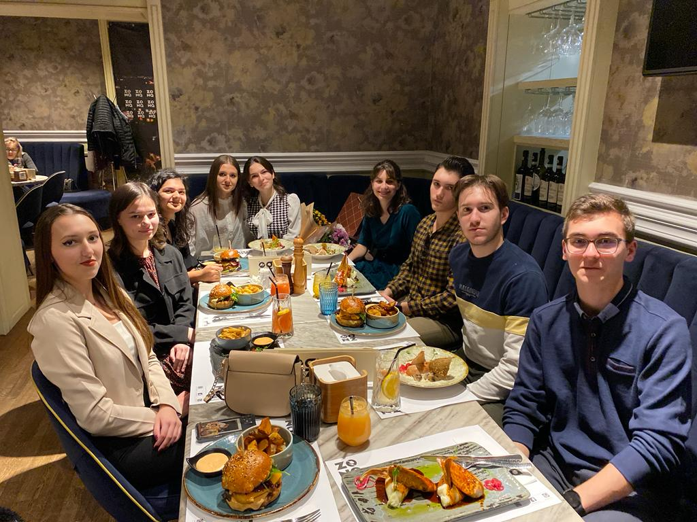
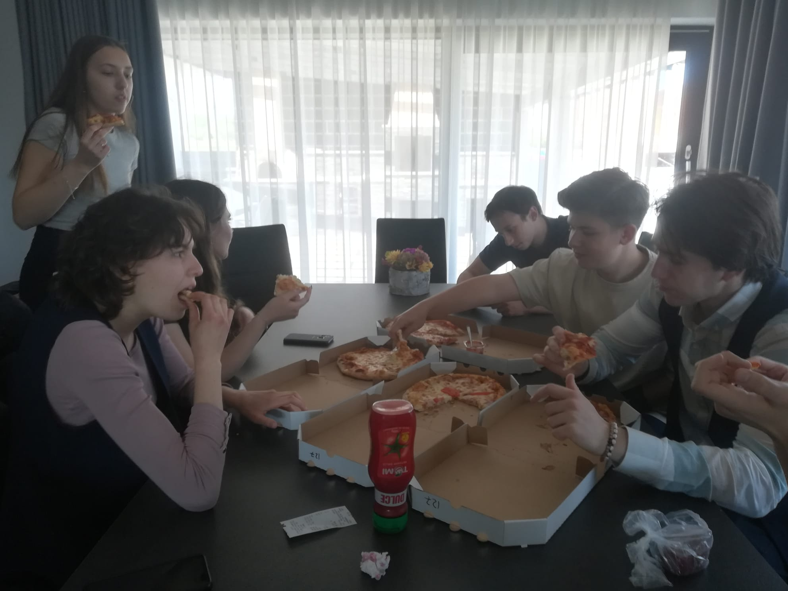

Proiecte
Totul a început în clasa a-X-a când firul narativ al nuvelei ,,Moara cu noroc” de Ioan Slavici i-a captivat pe câțiva dintre elevi. Întrebări de tipul ,,Ce aș fi făcut eu în locul lui Ghiță?” sau ,,De ce omul perimite ca banul să ia stăpânire asupra sufletului său?” și le-au pus licceeni echipei Stelfix, iar acest interes pentru înțelegerea mesajului autorului i-a motivat să realizeze un trailer al nuvelei. Astfel, regizorul Corina a consider că rolul bătrânei, mama Anei și soacra lui Ghiță, i se potrivește Catincăi, o fire calmă și cumpătată, care încearcă mereu să își ajute colegii cu sfaturi înțelepte. De asemenea, a convins și alți colegi de clasă precum Ionuț, Ștefan și Alexia să ia parte la această ,,aventură”. Entuzianst și mereu dornic să se implice în activități extrașcolare, Ștefan a răspuns afirmativ provocării și l-a interpretat pe cârcimar, personajul principal, cu mult simț de răspundere. Mai mult, costumația și cadrul adecvat a constituit un element la fel de important pentru echipă precum conținutul videoclipului. Ca urmare, adolscenții au fost atenți să aleagă un loc corespunzător și anume Muzeul Satului Bucovinean din Suceava, și totodată, au îmbrăcat cu drag portul polular la îndemnul Corinei. Pe lângă toate avantajele pe care le oferă colaborarea cu colegii de clasă în vederea realizării videoclipurilor pentru Stelix, liceeni implicați mai beneficiază de un mare folos: rețin pe termen lung informații utile pentru examenul de bacalaureat precum scene semnificative pentru tema nuvelei ( pe care aceștia le interpretează prin film). În cazul operei ,,Moara cu noroc” membrii echipei au realizat scene precum întâlnirea dintre Lică Sămădăul și Ghiță și finalul surpins prin viziunea bătrânei.
Un alt text care le-a stârnit interesul membrilor echipei Stelfix a fost romanul ,,Enigma Otiliei”, scenele alese de elevi fiind venirea lui Felix în casa lui Moș Costache, vizitarea moșiei lui Pascalopol și dicuția dintre Felix și Olilia cu o seară înainte ca aceasta să fugă la Paris. Catinca a fost cea care, bucuroasă și dornică să repete experiența filmării unui trailer alături de colegi, a ținut ca proiectul să se realizeze la ea acasă. A ales să o interpreteze pe Aglae Tulea, vrând să se pună în pielea unui personaj negativ, plin de ură și invidie. Gabriela i s-a alăturat, luând rolul fiicei Aglae, Aurica. Alexia, colega noastră cu ochii albaștri și pasionată de pian, a simțit că rezonează cu personajul Otilia, iar Casian, impresioant de ambiția viitorului medicinist Felix a decis să îl interpreteze. Tudor, fiind atras de atmosfera și energia echipei s-a implicat de asemenea, jucând rolul bătrânului Costache. Împreună, addolescenții și-au expus viziunea și punctul de vedere sub îndrumarea regizorului și a cameramanului Luca, care a dedicat mult timp editării videoului, fiind extrem de atent la detalii.
"Vara Ștefaniștilor" este un proiect captivant sub forma unui videoclip amuzant ce aduce în prim-plan povești și întâmplări din istoria bogată a liceului. Prin intermediul acestui proiect, sunt redate în mod captivant și autentic momente memorabile, întâmplări și amintiri care au definit liceul și comunitatea sa. Cu umor și creativitate, videoclipul surprinde esența și spiritul Ștefaniștilor, oferind o călătorie plină de amuzament și nostalgie prin istoria școlii.
O temă dată de doamna profesoră de limba română la clasă-,,Cum arată iadul din perspectiva unui elev?” a fost ignorată, pentru o perioadă, de elevii care acum au trecut deja în clasa a XI-a. Însă, după o pauză destul de lungă, membrii Steflix au decis să se reunească și să încerce ceva nou: să ,,surprindă în imagini” tema pentru acasă. Pornind de la ideea că fiecare persoană percepe iadul în mod diferit, orice om reacționând altfel la situații dificile, echipa a creat un video care să evidențieze personalitățile diferite ale unor școlari, care interpretează ,,oroarea” bazat pe valoarea propriilor principii. De plidă, Gabriela a ales să se se pună în locul profesorului pentru care unul dintre cele mai devastatoate chestiuni este să aibă parte doar de elevi dezinteresați, cărora nu le poate captiva atenția. Ilinca a fost cea care, cu un spirit antreprenorial, a venit cu ideea să arate că, pentru unele persoane, devastator este să își risipească vremea, să nu își atingă potențialul maxim, să nu facă pe cât de mulți bani pe cât ar putea, într-o lume materială și competitivă. Ștefan a reprezentat tipul tocilarului, oripilat de o ,,notă mică”-9,50. De altminteri, pentru firea artistică, cea mai mare durere este să își vadă ustensilele de pictat/desenat stricate. Scopul acestui proiect a fost să pună în lumină mai multe perspective, ilustrând universul exterior al unor peronaje, interpretat cu ajutorul universului interior al acestora, și să sugereeze ideea că, deși viața presupune bineînțeles multe coborâșuri și situații dificile, ține de noi să facem o schimbare, pentru că suntem cei care avem putere asupra propriilor gânduri.
Despre noi

Leonte Luca
Editor
Fiecare cadru, fiecare unghi și fiecare secvență de montaj sunt atent lucrate de Luca pentru a aduce viață povestirilor noastre.

Bacrau Corina
Regizor
Corina, regizorul echipei Stelfix, ghidează întreaga echipă către îndeplinirea viziunii noastre comune.

Rimbu Gabriela
Actrita
Gabriela este o actriță extrem de talentată, cu o prezență puternică pe ecran și o capacitate impresionantă de a aduce profunzime și autenticitate personajelor pe care le interpretează.

Rauliuc Catinca
Actrita
Catinca este o actriță talentată, cu o prezență carismatică pe ecran și o abilitate remarcabilă de a aduce personajele la viață prin interpretarea sa autentică și captivantă.
Poze











